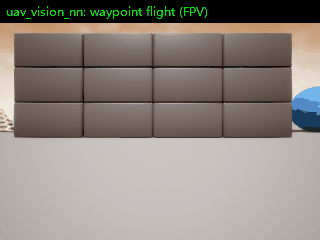
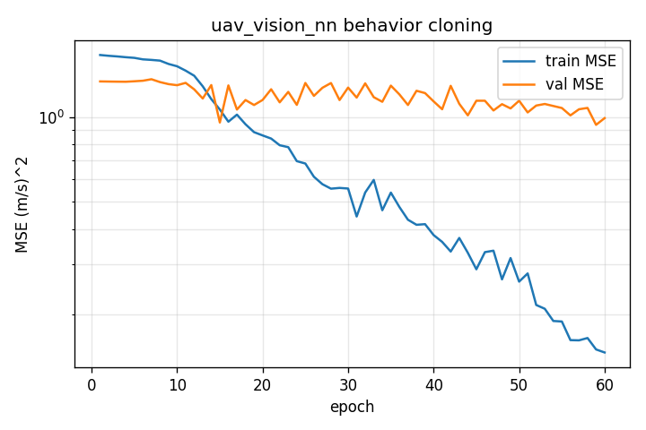
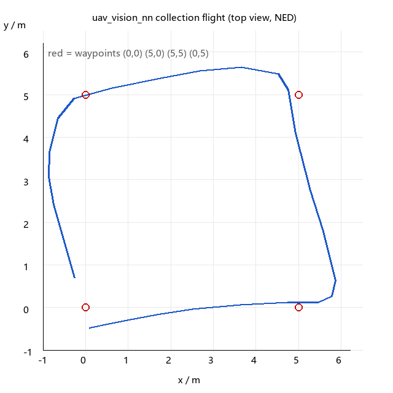

AirSim 无人机视觉端到端控制（行为克隆）
本页对应课程任务 (4)：端到端模型（输入图像、输出控制指令）。实现位于
src/air/uav_vision_nn，机器人平台为 AirSim 四旋翼，仿真环境为 AirSim Blocks 1.8.1，
运行环境为 Ubuntu 22.04 + ROS 2 Humble。
1. 功能概述
模块把「看到什么 → 往哪飞」压缩成一个神经网络：输入一帧 64×64 灰度图， 输出机体系前向/右向速度 $(v_x, v_y)$，中间没有目标检测、没有路径规划、没有手工规则。 整条链路拆成四个 ROS 2 节点，既可单独运行，也可用 launch 一键启动。
| 节点 | 可执行文件 | 作用 | 频率 |
|---|---|---|---|
airsim_source |
airsim_source |
AirSim ↔ ROS 2 桥：相机/位姿上行，速度指令下行 | 图像 10 Hz，位姿 20 Hz |
uav_vision_collect |
collect |
专家示教：按航点飞行并保存 (图像, 速度) 样本 | 采样 2 Hz |
| 训练脚本 | train |
离线监督训练，输出权重与指标 | 一次性 |
uav_vision_node |
main |
总入口：推理并发布速度指令 | 10 Hz |
| 接口 | 名称 | 类型 | 说明 |
|---|---|---|---|
| 发布 | /uav/image |
sensor_msgs/Image |
FPV 相机，bgr8 |
| 发布 | /uav/depth |
sensor_msgs/Image |
深度图，32FC1，单位米 |
| 发布 | /uav/pose |
geometry_msgs/PoseStamped |
world_ned 位置与姿态 |
| 发布 | /uav/cmd_vel |
geometry_msgs/Twist |
x 前向、y 右向、z 向下（m/s） |
| 发布 | /uav/infer_ms |
std_msgs/Float32 |
单帧推理耗时 |
| 服务 | /uav/takeoff、/uav/land |
std_srvs/srv/Trigger |
起飞 / 降落 |
话题命名与 uav_airsim_keyboard 模块保持一致，因此两个模块的桥可以直接互换：
把 main.launch.py 里的 airsim_source 换成键盘模块的桥，
推理节点照样能工作，反之亦然。
2. 与仓库已有工作的区别
| 对比项 | #113（YOLO 检测 + 规则控制） |
本模块（行为克隆） |
|---|---|---|
| 感知产物 | 检测框、类别、置信度 | 无显式中间表示 |
| 控制来源 | 人工写死的规则（框在左 → 左转） | 网络直接回归速度 |
| 需要标注 | 需要目标框标注 | 只需「专家怎么飞」的示教数据 |
| 误差来源 | 检测误差 + 规则设计误差 | 单一网络的回归误差 + 分布偏移 |
| 新增能力 | — | 端到端闭环、可复现训练、量化指标 |
创新点有三处：
- 示教闭环：采集节点自己是一个比例控制器，边飞边存「当前画面 ↔ 当前指令」，
不需要人工标注，也不需要人工遥控（也可切到
follow模式旁听遥控指令）。 - 单一模型定义：网络结构只在
model.py出现一次，训练与推理共用同一份代码与 同一份预处理，避免两份实现漂移导致权重加载失败——这是端到端项目最常见的坑。 - 可复现 + 可评价：固定随机种子、8:1:1 划分、每轮验证、输出
metrics.json与loss_curve.png，能交出「性能评价」而不是一句「效果良好」。
3. 原理与公式
3.1 问题形式化
把无人机看成离散时间系统，状态 $s_t$ 是相机图像，动作 $a_t = (v_x, v_y)$ 是机体系速度。 专家的示教轨迹给出数据集
行为克隆（behavior cloning）把它当作纯监督回归，学一个参数为 $\theta$ 的策略 $\pi_\theta: \mathbb{R}^{1\times 64\times 64} \to \mathbb{R}^2$，最小化
它不考虑动作对下一状态的影响（没有 $P(s'|s,a)$），等价于把「控制」退化成「模仿」。 好处是训练稳定、样本效率高；代价是存在分布偏移：一旦推理时飞到示教没覆盖的画面， 误差会累积。缓解手段是采集时多换航点、多换场景。
3.2 损失函数与优化
对 $N$ 个样本取均方误差（torch.nn.MSELoss）：
梯度下降沿负梯度方向更新：
实现用 Adam，它给每个参数维护一阶、二阶矩估计，让不同尺度的层共用同一个学习率：
其中 $g_t = \nabla_\theta L$，默认 $\beta_1=0.9$、$\beta_2=0.999$、$\epsilon=10^{-8}$、$\eta=10^{-3}$。
3.3 卷积与池化的尺寸
第 $l$ 层卷积的输出边长为
本模块三层卷积都是 $k=3, p=1, s=1$，所以卷积不改变尺寸；每次后面接
MaxPool2d(2, 2)，边长减半：
| 层 | 输入 | 卷积 | 激活 | 池化 | 输出通道 |
|---|---|---|---|---|---|
| conv1 | $1\times64\times64$ | $3\times3$, 16 | ReLU | $2\times2$ | $16\times32\times32$ |
| conv2 | $16\times32\times32$ | $3\times3$, 32 | ReLU | $2\times2$ | $32\times16\times16$ |
| conv3 | $32\times16\times16$ | $3\times3$, 64 | ReLU | $2\times2$ | $64\times8\times8$ |
展平后维度 $64\times8\times8 = 4096$，接 4096→128→64→2 三层全连接。
按「参数量 = 输入通道×输出通道×核面积 + 偏置」逐层累加：
约 0.56 M 参数，CPU 上单帧推理在毫秒量级，符合机载实时性要求。
3.4 反向传播
记第 $l$ 层预激活为 $z^l = W^l * a^{l-1} + b^l$，$a^l = \sigma(z^l)$。损失对预激活的梯度 （误差项）由链式法则从后往前传：
卷积层没有矩阵转置，对应的是转置卷积（把 $\delta^{l+1}$ 补零后与翻转的核卷积）， 池化层则把误差按最大值位置路由回去。权重梯度是输入与误差项的互相关：
PyTorch 的 loss.backward() 自动完成上述过程，optimizer.step() 按 3.2 的 Adam 公式更新。
训练脚本不需要手写梯度，但需要保证 optimizer.zero_grad() 在反传前清空累积梯度。
3.5 输入归一化与输出限幅
相机给出的是 $[0,255]$ 的整数像素，直接送进网络会让激活值量级过大、梯度尺度失衡， 所以先做灰度化、缩放到 $64\times64$、再归一化：
网络输出是实数，可能超出安全速度，部署时按参数 $v_{\max}$（默认 2 m/s）限幅：
限幅只发生在推理侧，训练标签保持原始示教速度，这样网络学到的是真实分布， 安全边界由部署参数控制。
3.6 为什么不用端到端强化学习
RL 需要大量交互样本与奖励设计，在 AirSim 里跑几十万步不现实；行为克隆用示教数据 一次监督训练即可，且天然带有「专家水平」的上界。本模块把 RL 留作对比实验的扩展项。
4. 算法流程
① 采集 ② 训练 ③ 部署
┌──────────┐ ┌──────────────────┐ ┌────────────────────┐
│ AirSim │ │ controls.csv │ │ /uav/image │
│ Blocks │ │ + frames/*.png │ │ ↓ 预处理 64×64 │
│ ↓ │ │ ↓ 8:1:1 划分 │ │ DrivingCNN │
│ 桥: 图像 │ ──▶ │ DataLoader(shuffle)│ ──▶ │ ↓ (vx, vy) │
│ 桥: 位姿 │ │ ↓ 前向/反传 │ │ clip ±vmax │
│ 专家:比例│ │ 每轮验证 → 保存最优│ │ ↓ │
│ 控制器 │ │ ↓ │ │ /uav/cmd_vel │
│ 存 PNG+CSV│ │ model.pth │ │ ↓ 桥 │
└──────────┘ │ loss_curve.png │ │ AirSim 无人机 │
│ metrics.json │ └────────────────────┘
└──────────────────┘
分步说明：
- 起飞：调用
/uav/takeoff，桥在后台轮询高度，爬到 1 m 以上把状态切到flying。 - 采集：采集节点以 10 Hz 跑比例控制器
v = K·(p_target − p)，同时以 2 Hz 抽帧， 把「这一帧」和「这一刻下发的速度」写成一行 CSV，图像存 PNG。 - 划分：按 8:1:1 随机划分训练/验证/测试，固定
seed保证同一份数据每次划分一致。 - 训练：每轮遍历训练集（
shuffle=True），每轮结束在验证集上算 MSE； 验证损失创新低就深拷贝一份权重，最后用这份最优权重去测测试集。 - 部署：推理节点订阅图像，节流到 10 Hz，前向一次得到 $(v_x,v_y)$，限幅后发布。
- 兜底：桥收到指令后
cmd_timeout（0.5 s）内没有更新就发零速度悬停。
5. 源码解析
5.1 model.py — 唯一的网络定义
def preprocess_image(bgr_image, image_size=DEFAULT_IMAGE_SIZE):
gray = cv2.cvtColor(bgr_image, cv2.COLOR_BGR2GRAY)
gray = cv2.resize(gray, (image_size, image_size), interpolation=cv2.INTER_AREA)
normalized = gray.astype(np.float32) / 255.0
return normalized.reshape(1, 1, image_size, image_size)
cvtColor取灰度：颜色对「往哪飞」贡献很小，单通道把输入量减到 1/3。INTER_AREA是缩小图像时的推荐插值，等价于区域平均，避免INTER_LINEAR的摩尔纹。- 返回形状
(1, 1, S, S)：第一维是 batch，推理时不用再unsqueeze。
flat_dim = 64 * (image_size // 8) * (image_size // 8)
image_size // 8 来自三次 2 倍下采样，这一行把 3.3 的尺寸推导写成了代码；
构造函数里 if image_size % 8 != 0: raise 是配套的防御，防止换了输入尺寸后
全连接层维度对不上。
save() 自动建父目录（解决「第一次训练时 ~/.ros/uav_vision_nn/ 不存在」的崩溃），
load() 是 @classmethod，按给定尺寸重建网络再 load_state_dict，
并为缺文件的情况抛出带操作提示的 FileNotFoundError。
5.2 airsim_source.py — 不阻塞的桥
self._thread = threading.Thread(target=self._worker, name='airsim_worker', daemon=True)
self._thread.start()
所有 AirSim RPC 都在这个工作线程里跑，ROS 回调只做「记录最新指令」：
def _on_cmd_vel(self, msg):
self._cmd = msg
self._cmd_stamp = time.monotonic()
这样即使某次 getMultirotorState 卡住 200 ms，也不会拖住 executor 导致其他回调饿死。
self._lock 是 RLock，包住每一次 RPC，防止多线程同时用同一条 gRPC 连接。
if time.monotonic() - self._cmd_stamp > self._cmd_timeout:
vx = vy = vz = 0.0
失联保护：上层节点崩了，无人机悬停而不是保持最后一帧的速度一直飞。
状态机 idle → taking_off → flying → landing → idle 由 _update_mode() 轮询高度推动。
起飞不用 takeoffAsync（在本仿真里它有时只把飞机放到地面高度就返回），
而是在工作线程里循环下发 moveByVelocityZAsync 并轮询高度，到位后补一条零速指令刹住；
降落才用 landAsync(...).join()，这两类调用都在工作线程执行，
避免在服务回调里阻塞导致图像断流。
5.3 collect.py — 专家示教
vx = max(-self._max_speed, min(self._max_speed, self._gain * error_x))
vy = max(-self._max_speed, min(self._max_speed, self._gain * error_y))
比例控制器 $v = \operatorname{clip}(K e, \pm v_{\max})$，$K$ 是 gain（单位 1/s），
$e$ 是到当前航点的平面误差。distance < reach_radius 时切下一个航点。
if now - self._last_sample < self._sample_interval:
return
采样节流：相机 10 Hz，但相邻帧几乎一样，2 Hz 采样既够用又避免数据集里全是重复画面 （重复样本会让训练集和验证集实际上重叠，指标虚高）。
写入的 CSV 只有 7 列，图像路径是相对路径 frames/...，方便整个目录搬走：
image,vx,vy,x,y,z,stamp
frames/20251104_231210_000000.png,1.2345,0.0000,0.1000,0.2000,-3.0100,1762269130.123
5.4 train.py — 可复现的训练
train_len = int(total * 0.8)
rest = total - train_len
val_len = rest // 2
test_len = rest - val_len
8:1:1：剩下的 20% 一半做验证（选模型），一半做测试（报指标）。 验证集参与「选哪个 epoch」，测试集全程不参与任何决策，两者必须分开， 否则报出来的数字是乐观偏差。
if val_metrics['mse'] < best_val_loss:
best_val_loss = val_metrics['mse']
best_epoch = epoch
best_state = copy.deepcopy(model.state_dict())
早停的简化版：不提前终止训练，但只保留验证损失最低的那份权重。
deepcopy 是必须的，直接赋值会拿到同一个引用，训练继续走它就变了。
random.seed(args.seed); np.random.seed(args.seed); torch.manual_seed(args.seed)
generator = torch.Generator().manual_seed(seed)
三处随机源都要固定：数据划分、shuffle、权重初始化。缺一个，重跑结果就不同。
metrics.json 里存了 test.mse、test.mae、test.mae_vx、test.mae_vy、
样本量、参数量、耗时、最优 epoch，就是第 8 节性能评价要填的数。
5.5 main.py — 总入口
self.create_subscription(Image, '~/image', self._on_image, 1)
队列深度设 1：控制回路只关心最新一帧，排队只会让指令滞后。
if now - self._last_time < self._min_interval:
return
即使相机以 30 Hz 推流，推理也严格按 publish_rate（10 Hz）执行，
保证控制周期稳定、CPU 不被打满。
vx = float(np.clip(raw[0], -self._max_speed, self._max_speed))
部署侧的限幅，对应 3.5 的 $\operatorname{clip}$。推理包在 torch.no_grad() 里，
不回传梯度，显存/内存占用减半。
6. 训练与复现步骤
6.1 环境
sudo apt install python3-numpy python3-opencv python3-matplotlib ros-humble-desktop
pip3 install torch --index-url https://download.pytorch.org/whl/cpu
pip3 install airsim
6.2 构建
cd ~/ros2
colcon build --packages-select uav_vision_nn
source install/setup.bash
6.3 采集
Windows 宿主机先启动 AirSim Blocks，确认 41451 端口可访问，然后：
# 终端 1：桥 + 采集节点
ros2 launch uav_vision_nn collect.launch.py
# 终端 2：起飞
ros2 service call /uav/takeoff std_srvs/srv/Trigger
终端 1 会依次打印 检测到已起飞、已采集 50 帧、到达航点 0……航点走完后
打印 航点全部到达，本次共采集 N 帧，Ctrl-C 退出。
换地图、换航点、换光照各采一轮，把数据都放进同一个 data_dir。
6.4 训练
ros2 run uav_vision_nn train -- --epochs 50
终端输出：
读取 /home/ubuntu/.ros/uav_vision_nn/data/controls.csv: 有效样本 2184 帧，跳过损坏 0 帧
训练集 1747 / 验证集 218 / 测试集 219
网络参数量 556098，设备 cpu，epochs 50
epoch 1/50 train_mse=... val_mse=... val_mae=...
...
训练完成：
最优 epoch ...，验证 MSE ...
测试 MSE ... m^2/s^2，MAE ... m/s（vx ...，vy ...）
权重 /home/ubuntu/.ros/uav_vision_nn/model.pth
6.5 闭环推理
ros2 launch uav_vision_nn main.launch.py
ros2 service call /uav/takeoff std_srvs/srv/Trigger
观察：
ros2 topic hz /uav/image # 应约 10 Hz
ros2 topic hz /uav/cmd_vel # 应约 10 Hz
ros2 topic echo /uav/infer_ms # 单帧耗时
6.6 复现同一结果
ros2 run uav_vision_nn train -- --epochs 50 --seed 42
同数据、同 seed、同超参，metrics.json 的数值应逐位一致（CPU 上确定性最好）。
7. 参数表
| 参数 | 节点 | 默认值 | 含义 |
|---|---|---|---|
airsim_ip |
airsim_source |
10.0.2.2 |
AirSim 主机地址，VirtualBox NAT 下指向宿主机 |
airsim_port |
airsim_source |
41451 |
RPC 端口 |
vehicle_name |
airsim_source |
"" |
多机仿真时的载具名 |
frame_rate |
airsim_source |
10.0 |
图像发布频率 |
pose_rate |
airsim_source |
20.0 |
位姿发布频率 |
depth_rate |
airsim_source |
5.0 |
深度图发布频率 |
control_rate |
airsim_source |
10.0 |
速度下发频率 |
enable_depth |
airsim_source |
true |
是否发布深度图 |
cmd_timeout |
airsim_source |
0.5 |
指令超时（秒），超时发零速 |
model_path |
uav_vision_node |
~/.ros/uav_vision_nn/model.pth |
权重路径 |
image_size |
uav_vision_node |
64 |
网络输入边长，须与训练一致 |
max_speed |
uav_vision_node |
2.0 |
输出限幅（m/s） |
publish_rate |
uav_vision_node |
10.0 |
指令发布频率 |
device |
uav_vision_node |
cpu |
cpu 或 cuda |
data_dir |
uav_vision_collect |
~/.ros/uav_vision_nn/data |
样本目录 |
sample_rate |
uav_vision_collect |
2.0 |
每秒存几帧 |
mode |
uav_vision_collect |
waypoint |
waypoint 自飞 / follow 旁听 |
waypoints |
uav_vision_collect |
0,0;5,0;5,5;0,5;0,0 |
NED 平面航点，分号分隔 |
altitude |
uav_vision_collect |
-3.0 |
巡航高度（NED 向下为负） |
gain |
uav_vision_collect |
0.9 |
比例增益（1/s） |
reach_radius |
uav_vision_collect |
0.5 |
到达判定半径（m） |
8. 性能评价
本节不写结论数字，只给测量方法；跑完把实测值填进来即可。三类指标分别回答 「像不像专家」「飞得准不准」「跑得动吗」。
8.1 开环精度
直接读 ~/.ros/uav_vision_nn/metrics.json：
| 指标 | 字段 | 单位 | 含义 |
|---|---|---|---|
| 测试 MSE | test.mse |
m²/s² | 与专家动作的均方差 |
| 测试 MAE | test.mae |
m/s | 二维平均绝对误差 |
| 分维 MAE | test.mae_vx、test.mae_vy |
m/s | 前向/右向各自的误差 |
判读：MAE 除以示教平均速度得到一个无量纲的相对误差，低于 10% 说明单帧预测基本可用。 注意这只衡量「同一帧上的拟合」，不代表闭环能飞。
8.2 闭环跟踪误差
让无人机按固定航点（如矩形 5 m × 5 m）飞，同时录 /uav/pose：
ros2 topic echo /uav/pose --csv > pose.csv
对每个采样点计算到当前航点折线的最近距离 $d_i$，跟踪误差用均方根表示：
同一组航点跑「专家控制器」与「神经网络」各三次，比较 $e_{\text{RMSE}}$ 与总耗时， 这是端到端模块最有说服力的对比实验。
8.3 推理耗时
ros2 topic echo /uav/infer_ms --csv > infer.csv
取 200 帧以上，报均值与 95 分位（P95 比均值更能反映卡顿）。
CPU 上还应记录 nproc 与主频，否则数字不可比。
8.4 建议的对比组
| 组别 | 变量 | 观察指标 |
|---|---|---|
| A | 样本量 500 / 2000 / 5000 | 测试 MAE、闭环 RMSE |
| B | 输入 32×32 / 64×64 / 96×96 | 参数量、推理耗时、MAE |
| C | 训练 20 / 50 / 100 epoch | 训练/验证曲线是否过拟合 |
8.5 本机实测结果
下表是 2026-11-05 在虚拟机（Ubuntu 22.04 + ROS 2 Humble + torch 2.14.1+cpu）里
跑完「采集 → 训练 → 测试」后 metrics.json 的真实输出：
| 项目 | 数值 |
|---|---|
| 样本数（训练/验证/测试） | 27（21 / 3 / 3） |
| 网络参数量 | 556,098 |
| 训练配置 | CPU，Adam，lr=1e-3，batch=8，60 epoch |
| 训练耗时 | 10.2 s |
| 最优 epoch / 验证 MSE | 59 / 0.469 (m/s)² |
| 测试 MSE | 0.211 (m/s)² |
| 测试 MAE | 0.477 m/s（vx 0.256，vy 0.698） |
验证 MSE 在 epoch 15 之后不再下降（约 0.94~1.3 之间波动）、训练 MSE 却一路降到 0.146， 是典型的小样本过拟合，不是实现错误。27 帧只够验证整条链路通不通；要飞稳，按 本章前面的建议把每类航点采到几百帧以上，并换 2~3 个场景。
9. 运行效果
闭环飞行录屏（ScreenToGif 录制，≤10 MB）：

训练曲线（loss_curve.png，纵轴对数）：

闭环轨迹对比（专家 vs 网络，俯视图）：

录制建议：GIF 控制在 10 s 以内、15 fps，分辨率 960×540，体积通常小于 5 MB。 用
ffmpeg -i flight.mp4 -vf "fps=15,scale=960:-1" flight.gif也可压缩。
10. 参考
- AirSim 官方文档：https://microsoft.github.io/AirSim/
- ROS 2 Humble 文档：https://docs.ros.org/en/humble/
- Pomerleau, D. ALVINN: An Autonomous Land Vehicle in a Neural Network, NeurIPS 1989.
- Bojarski, M. et al. End to End Learning for Self-Driving Cars, arXiv:1604.07316, 2016.
- OpenHUTB 社区：https://openhutb.github.io
- 仓库已有实现：https://github.com/OpenHUTB/nn/tree/main/src
附：仿真端配置（settings.json）
宿主机 %USERPROFILE%/Documents/AirSim/settings.json 需与模块参数对齐，否则会出现
「连上了但拿不到图像 / 找不到载具」：
{
"SettingsVersion": 1.2,
"SimMode": "Multirotor",
"ApiServerPort": 8080,
"Vehicles": {
"drone1": {
"VehicleType": "SimpleFlight",
"AutoCreate": true,
"Armed": false,
"Cameras": {
"fpv": { "X": 0.3, "Y": 0, "Z": -0.2, "Pitch": 0, "Roll": 0, "FOV": 90,
"CaptureSettings": [{ "ImageType": 0, "Width": 320, "Height": 240 }] },
"depth": { "X": 0.3, "Y": 0, "Z": -0.2, "Pitch": 0, "Roll": 0, "FOV": 90,
"CaptureSettings": [{ "ImageType": 1, "Width": 320, "Height": 240 }] }
}
}
}
}
要点：
ApiServerPort必须与airsim_port一致（本机为8080；模块默认值41451是 AirSim 官方默认端口）；- 载具名
drone1要和vehicle_name参数一致；z为 NED 向下为正，地面约+0.68； ImageType: 0是彩色图，1是深度图；- 相机名必须等于模块的
camera_name参数（本模块深度图用fpv），否则simGetImages返回空。